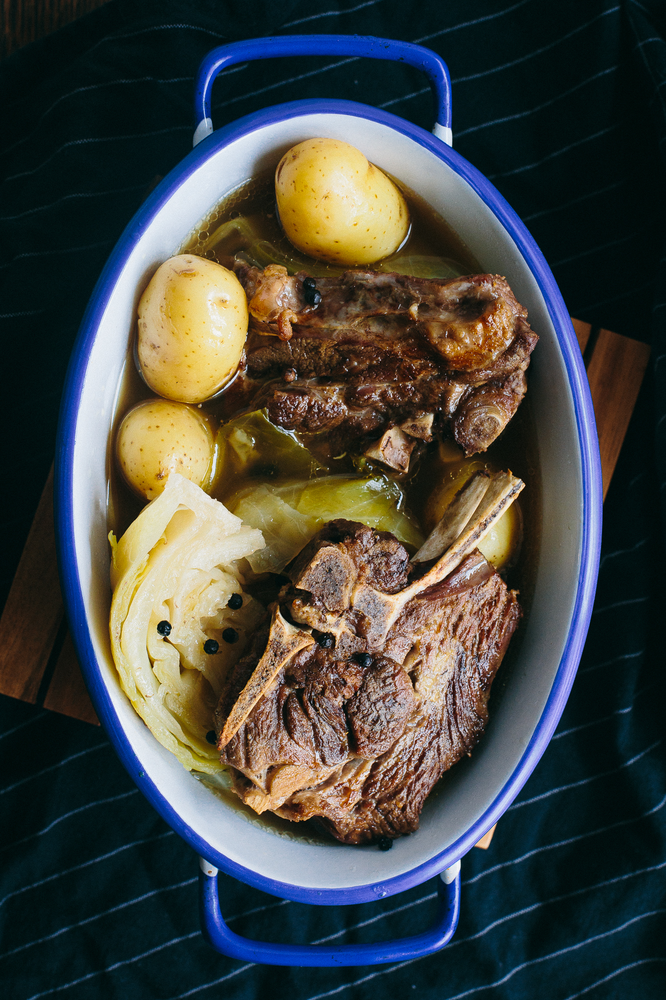
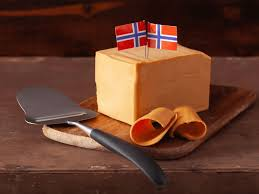
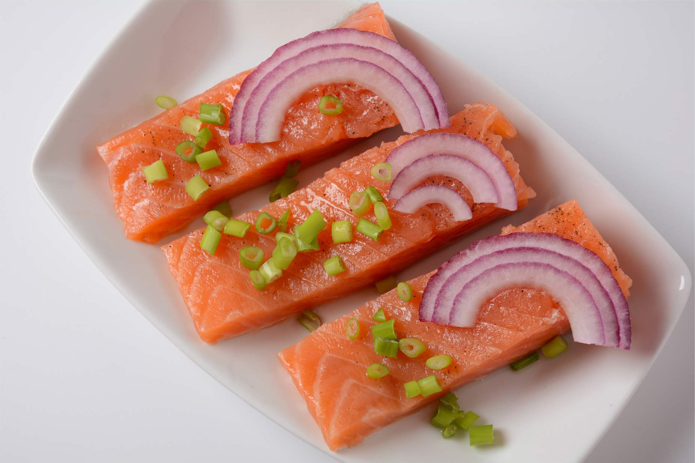

NORWAY GASTRONOMY
|
|
|
|
|
|
|
key traditional dishes and indridients.
Norwegian gastronomy is a rustic, seasonal cuisine featuring hearty stews, brown cheese, and foraged berries, often highlighting natural, pure flavors in a modern, sustainable contex |
| Fårikål |
Seafood |
| is formally recognized as the national dish of Norway and is a cornerstone of Norwegian autumn gastronomy. It is a simple, hearty, one-pot stew consisting of mutton, cabbage, peppercorns, and water |
 |
Norwegian gastronomy is profoundly defined by its cold, pristine coastal waters, featuring world-renowned, sustainably sourced seafood as a staple, including salmon, cod (skrei), king crab, and herring. |
 |
| Brunost |
Game Meat |
| Brunost ("brown cheese") is a traditional Norwegian whey cheese characterized by its tan color, firm, fudge-like texture, and sweet, caramel-like flavour. It is produced by boiling down cow or goat milk whey, causing the milk sugars to caramelize |
 |
a staple of Norwegian cuisine, deeply rooted in hunting traditions and celebrated for its rich, natural flavors, especially during the autumn hunting season. Key game includes reindeer, moose, deer, and grouse, often served with traditional accompaniments like lingonberries, mushrooms, and brown sauce. |
 |
| Rakfisk |
Lefse |
| a traditional Norwegian delicacy consisting of trout (or sometimes char) that has been salted and fermented for 2-3 months to up to a year. It has a very strong, pungent aroma, similar to strong cheese, but a mild, buttery, and salty taste. |
 |
is a traditional, soft Norwegian flatbread made primarily from riced potatoes, flour, butter, and milk or cream. Thinly rolled and cooked on a dry, hot griddle, it is a versatile, tender, and often slightly sweet delicacy commonly enjoyed during holidays |
 |
| Copy right 2026 Norway Gastronomy © |